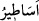
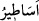

83. Hakikaten, gerek bize, gerekse daha önce atalarımıza böyle bir vaadde
bulunuldu; (fakat) bu geçmiştekilerin masallarından başka bir şey değildir!”
“Hakikaten, gerek bize, gerekse daha önce” yâni Muhammed (a.s.)’dan önce
“atalarımıza böyle bir vaadde” yâni yeniden diriltilme vaadinde “bulunuldu;” fakat
onlar onun bir hakîkat olduğunu görmediler. Bizi ve atalarımızı haşir ve neşir vaadinde
bulunarak korkuttular. Halbuki bu vaad doğru çıkmadı. “Bu geçmiştekilerin
masallarından” hakîkati olmadan yazdıkları yalanlarından “başka bir şey değildir!”
“ , “ kelimesinin çoğuludur. Bu kelime eğlence için olan nükteler ve
, “ kelimesinin çoğuludur. Bu kelime eğlence için olan nükteler ve
şakalar gibi şeyler hakkında kullanılmaz.
Burada işâret vardır ki Allah’ın tahkik üzere tasdike îmân nûru ile hidâyet ettiği kimse
hâriç öncekilerden ve sonrakilerden bütün insanlar taklîd ehlidir. Buradaki sonradan
gelenler, peygamberleri yalanlama, inkâr ve öldükten sonra diriltilmeyi red konusunda
geçmiş atalarını taklid ettiler.
Câmî (k.s.) der ki:
Tahkîk Kâbesine doğru gitmek istersen
Yolunu kaybetmiş taklidcilerin peşinden gitme